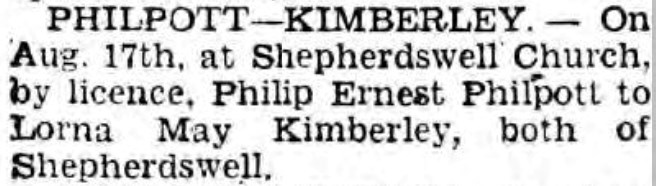
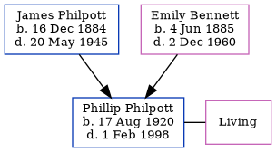

Phillip Ernest Philpott 1920 - 1998
[ Home ] | [ Calendar ] | [ Surnames Index ] | [ Errors ] | [ Family History ]The child of James Philpott (a seaman) and Emily Bennett (a servant), Phillip Philpott, the second cousin twice-removed on the mother's side of Nigel Horne, was born in Shepherdswell, Kent, England on 17 Aug 19201,2,3. He married Lorna Kimberley at Shepherdswell Church in Shepherdswell on 17 Aug 19454.
During his life, he was living at Rose Bank, Sibertswold, Kent, England on 19 Jun 19211 and on 29 Sept 19392.
He died on 1 Feb 1998 in Dover, Kent, England3.
Parents
- James Henry was born on 16 Dec 1884
- Emily was born on 4 Jun 1885
Citations
- 1921 Census Of England & Wales - Findmypast (was the son of the head of the household)
- 1939 Register - Findmypast (was the son of the head of the household)
- England & Wales deaths 1837-2007 - Findmypast
- England & Wales marriages 1837-2008 - Findmypast
Media
Dover Express - 31 Aug 1945

England & Wales births 1837-2006 - BMD/B/1920/3/AZ/001260/132
England & Wales marriages 1837-2008 - BMD/M/1945/3/AZ/001311/084
England & Wales deaths 1837-2007 - BMD/D/1998/2/82723813
1939 Register - TNA/R39/1814/1814C/021/35
1921 Census of England & Wales - GBC/1921/RG15/04518/0083/03
Family Tree
Map
Generated by ged2site. Last updated on Jul 3, 2024
Known Issues
Location for 19 Jun 1921 (Rose Bank, Sibertswold, Kent, England) differs from mother's (Sibertswold, Dover, Kent, England)
19 Jun 1921: Not living with either parent in childhood when aged 0